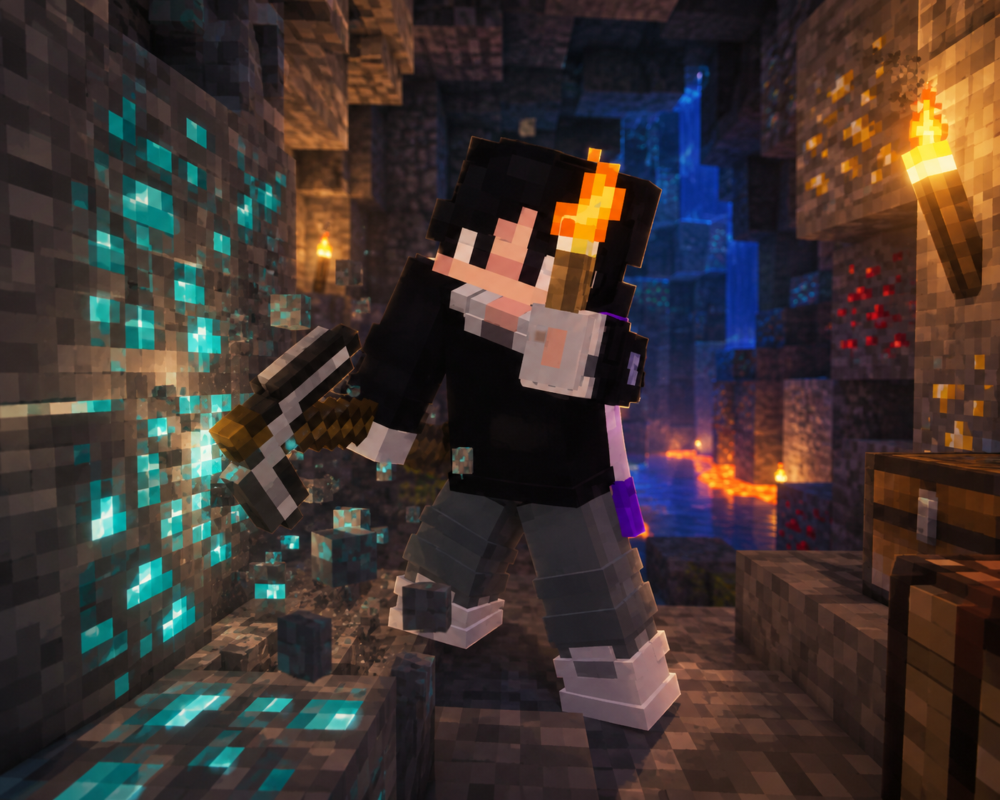
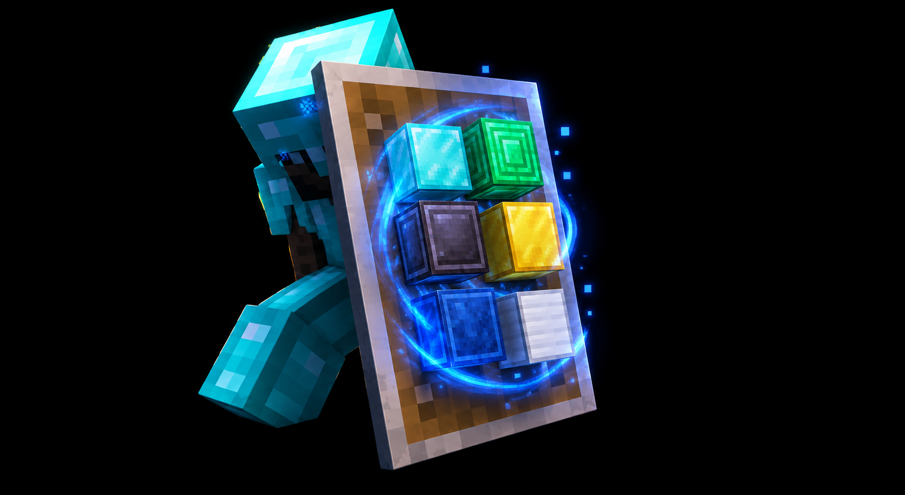
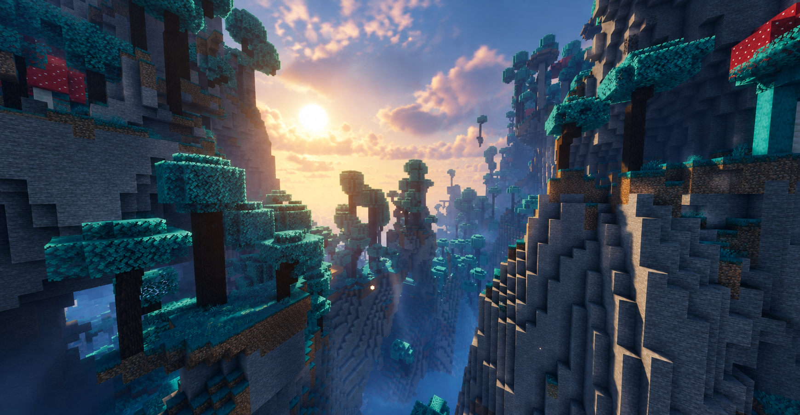
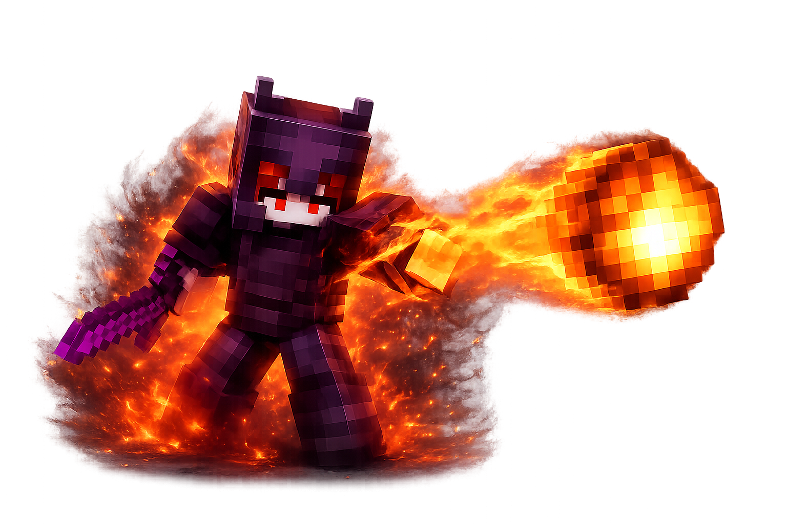
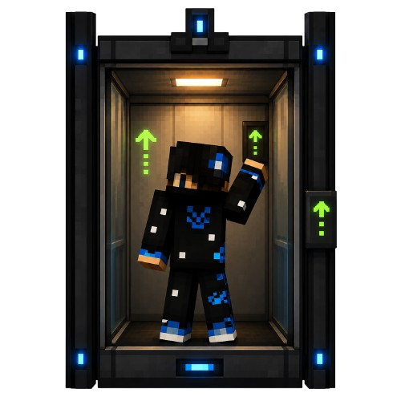
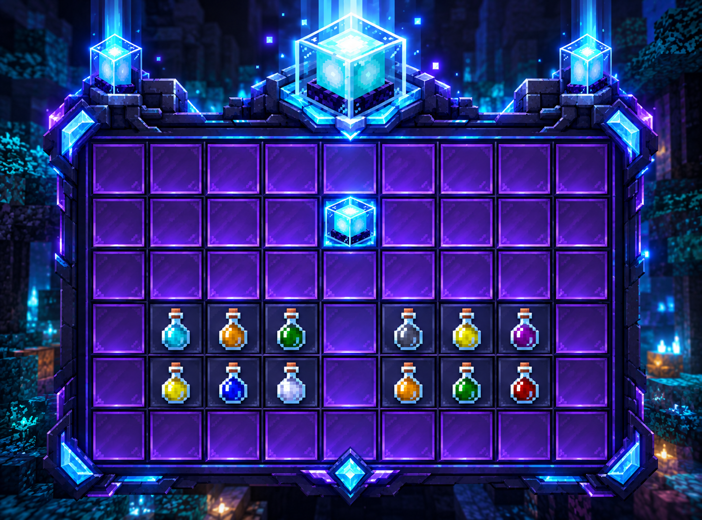

Cómo funciona Kalium por dentro
Los sistemas propios que dan forma a la partida: construcción, comunidad, economía, seguridad y progresión.

Clanes
Agrúpate con otros jugadores y compite por dominar Kalium. Sube de nivel el clan con kills y eventos para desbloquear cofre, estadísticas y ranking global.
/clan/clan create/clan invite
Jobs — trabajos
El método más fiable para generar dinero. Únete a hasta tres trabajos y gana con acciones cotidianas: minar, cultivar, pescar. Completa misiones diarias para recompensas extra.
/jobs/jobs browse
Protecciones
Coloca la piedra de protección en el centro de tu terreno y queda asegurado desde el subsuelo hasta el cielo. Desde 20×20 hasta 200×200. Añade amigos y configura flags.
/protecciones/ps add/ps flag
Rankups
Recorre el sistema solar alcanzando nuevos planetas. Sube desde Default hasta Eterno pasando por diez rangos intermedios, cada uno desbloquea nuevos kits, comandos exclusivos y sufijos de chat únicos.
/rankup
Skills — habilidades
Mina, cultiva y combate para subir de nivel tus habilidades: fuerza, vida máxima, regeneración y suerte. Actívalas con clic derecho consumiendo maná.
/skills/stats/mana
Pase de batalla
Completa misiones de temporada y desbloquea recompensas exclusivas a medida que avanzas de nivel. Cada temporada trae contenido nuevo.
/pase
Tienda
Con /shop podrás comprar de todo en el servidor. Los precios suben y bajan según la oferta y la demanda de cada ítem.
/shop
Mascotas
Tus mascotas combaten en PvP a tu lado, recogen ítems del suelo automáticamente y pueden servirte de montura. Personaliza nombre, comportamiento e inventario.
/petinfo/petstore
Spawners avanzados
Clic derecho en cualquier spawner de tu territorio para mejorarlo hasta nivel 5. Aumenta el alcance, reduce el delay y multiplica los mobs. Máx. 4 por chunk.
Clic derecho en spawner
Biomas custom
Biomas diseñados a medida que amplían la exploración más allá del mundo vanilla de Minecraft, con paisajes y recursos únicos.

Encantamientos custom
Consíguelos igual que cualquier encantamiento vanilla: en libros, aldeanos o cofres de botín. Nunca sabrás cuál te va a tocar, así que prepárate para sorprenderte con su poder.

Ascensores
Crea ascensores instantáneos apilando cuarzo con redstone encima, en línea recta vertical. Salta para subir, agáchate para bajar — sin comandos.
Cuarzo + Redstone
Beacons únicos
Kalium cuenta con beacons únicos que van mucho más allá del vanilla: efectos y bonificaciones exclusivas del servidor para potenciar tu base y tu progresión.